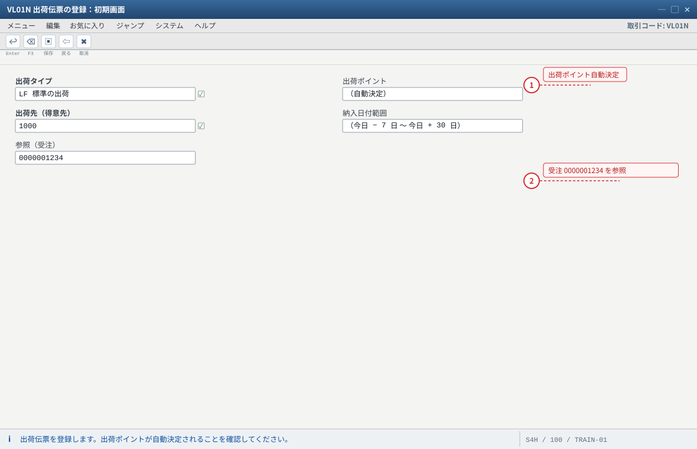
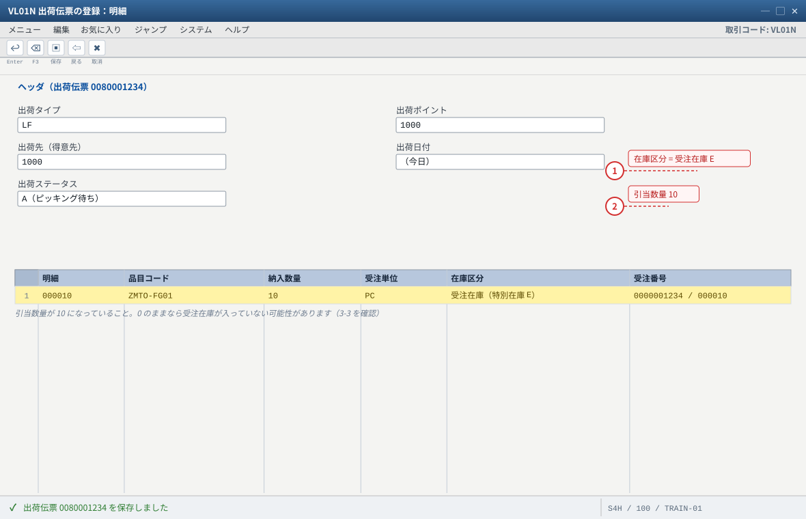
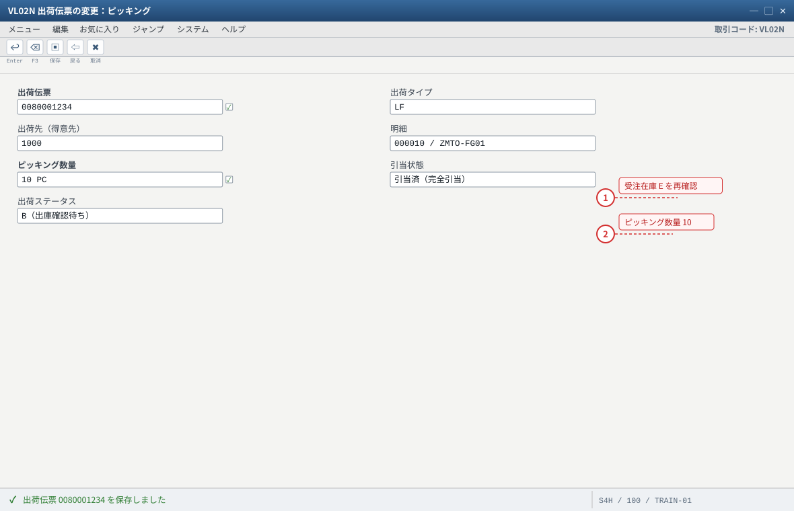
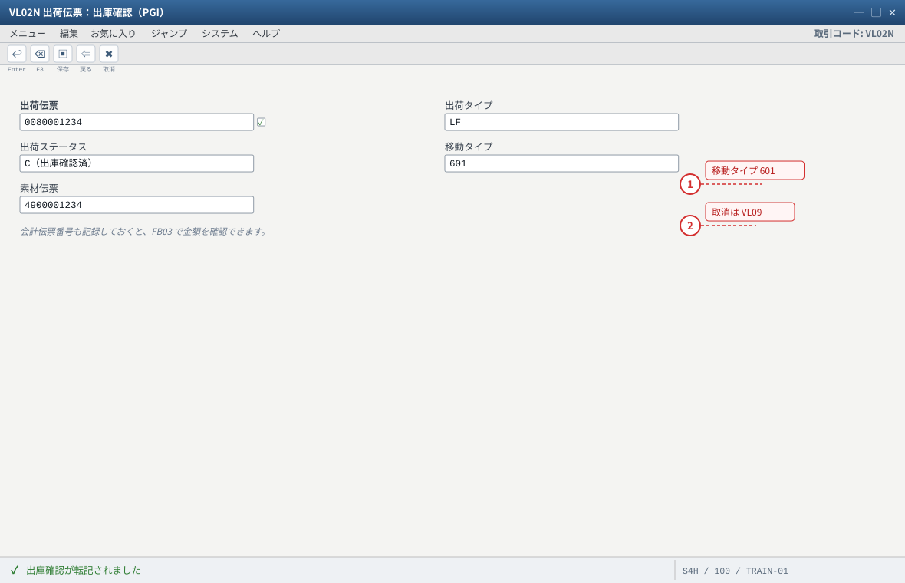
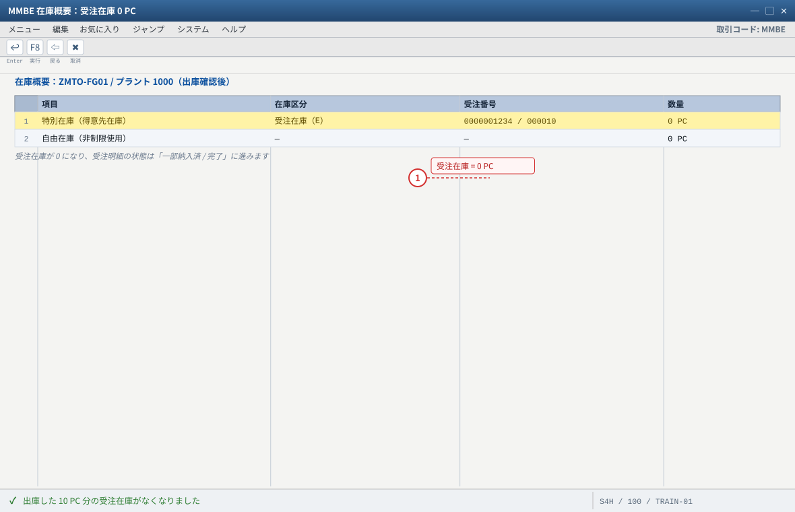
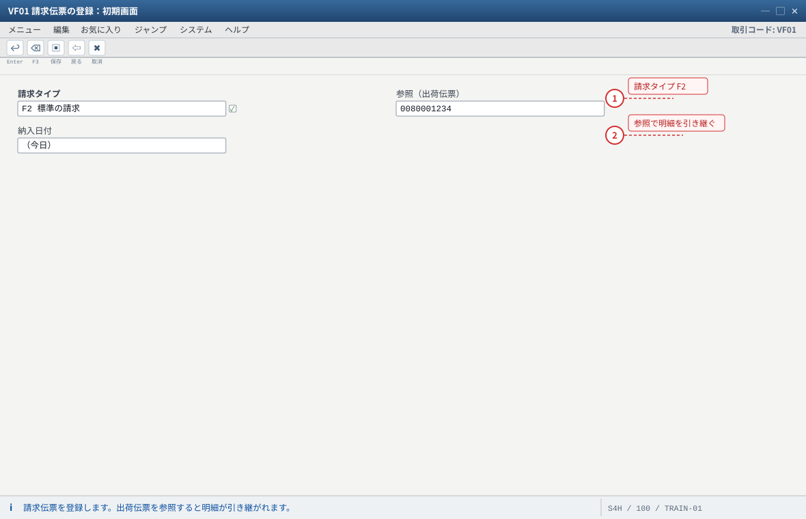
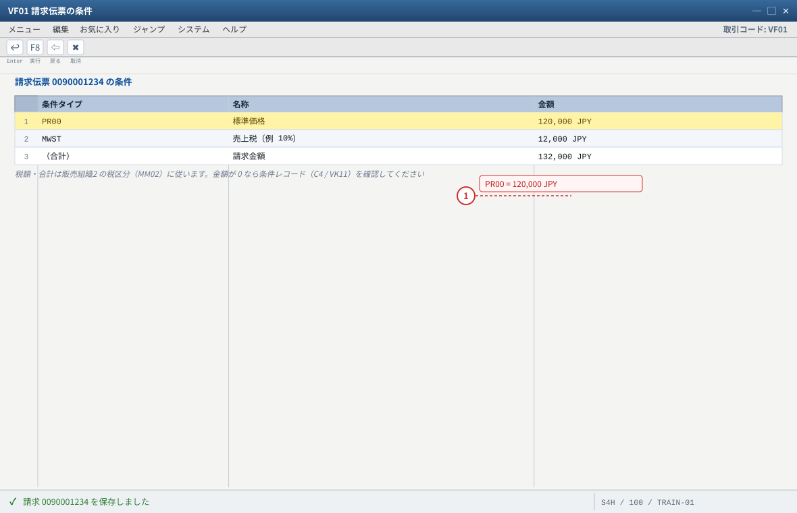
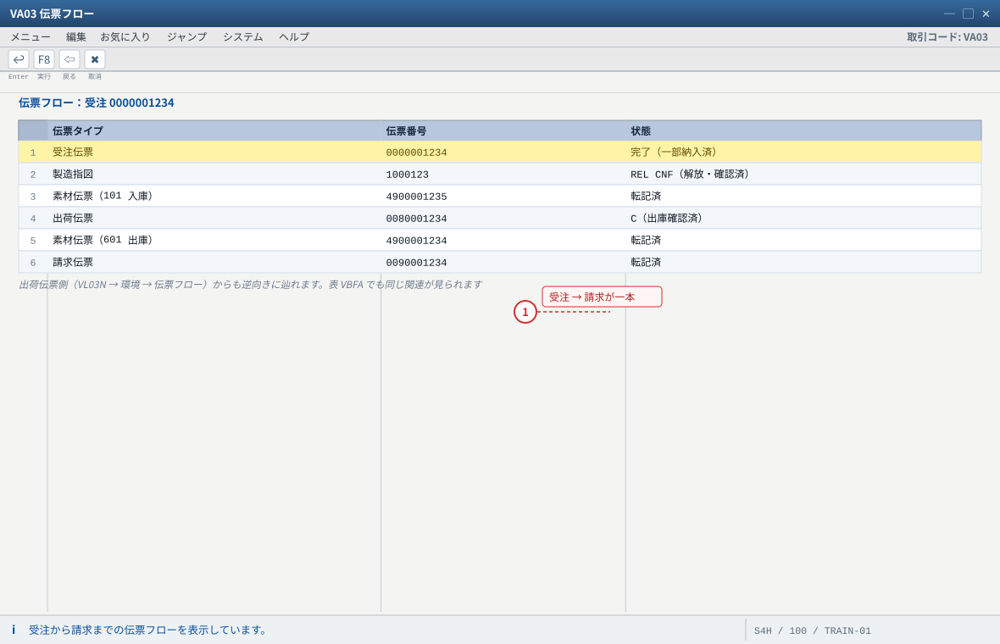
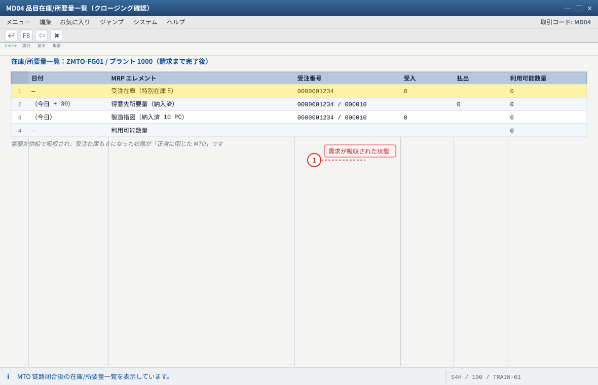

练习④ 出荷・出庫確認・請求
关于本页的「画面イメージ」：这些图是按 SAP GUI 标准布局重绘的示意图，不是实机截图。字段名、字段顺序、按钮位置会因版本与自定义而不同，请以自系统的画面为准（各 STEP 的「自系统での確認方法」里写了确认用的 T-code 与表）。若是想换成实机截图，把同名
.png 放进 assets/gui/ 后执行 python3 tools/swap_gui_images.py <site> --apply 即可一键替换。本练习完成什么
把练习③ 的受注在庫 10 PC 交出去并收钱：出荷伝票（VL01N）→ ピッキング → 出庫確認 PGI（601）→ 請求（VF01），
最后用 伝票フロー 把「受注 → 指図 → 出荷 → 請求」串成一条完整的链。
做完之后系统里的状态是：受注在庫 E = 0、受注明細请求完了、売上が計上されている。预计 50 分钟。
1 VL01N 出荷伝票
LF / 10 PC
LF / 10 PC
→
2 VL02N ピッキング
特在 E 引当
特在 E 引当
→
3 VL02N 出庫確認
PGI 601
PGI 601
→
4 VF01 請求
F2 / 120,000
F2 / 120,000
→
5 伝票フロー
全闭合
全闭合
→
✓ 验收
4-1 出荷伝票の登録（VL01N）
输入值
出荷タイプ : LF（標準の出荷） 出荷ポイント : 自動決定（プラント 1000 / 得意先 1000 から。決まらない場合は C15 の出荷ポイント決定を確認） 出荷先（得意先）: 1000 納入日付範囲 : 今日を含む範囲（例 今日 − 7 日 〜 今日 + 30 日） 参照 : 受注 0000001234（または VA03 → 明細 → 「出荷」から作成） 数量 : 10 PC（受注残数量）
- 做法 A（从受注进去）：
VA03→ 受注0000001234→ 明細 10 → 菜单「明細」→「出荷」（またはVL01N）→ 直接以该行为基础创建出荷伝票。 - 做法 B（标准入口）：
VL01N→ 出荷タイプLF、出荷ポイント（自动）、出荷先1000、納入日付范围 → Enter → 在「納入日程行の選択」画面勾选受注0000001234的纳期行 → 复制数量10→ Enter。 - 确认明細：品目
ZMTO-FG01、数量 10 PC、在庫区分 = 受注在庫（特別在庫 E）、受注番号/明細が引き継がれていること。 - 確認「引当（引当数量）」是否已为 10（受注库存货存在时应自动引当）。若为 0 → 见下方故障表。
- 「保存」→ 记下出荷伝票番号（例
0080001234）。状态为「A（未処理/ピッキング待ち）」。

- 1 出荷ポイントはプラント 1000 と出荷先 1000 から決定されます。決まらないと出荷伝票は保存できません
- 2 受注を参照すると納期行が提案され、受注在庫 E がそのまま引き継がれます
自システムでの確認：VA03 → 明細 → メニュー「明細」→「出荷」から、受注明細をそのまま出荷伝票にすることもできます。

- 1 在庫区分が受注在庫（E）になっていること。自由在庫だと出荷と受注在庫がつながっていません
- 2 引当（引当数量）が 10 なら現物が確保できています
自システムでの確認：引当が 0 のときは受注在庫の数量（MMBE）と納期行の日付を確認してください。
4-2 ピッキングと確認（VL02N）
VL02N→ 出荷伝票番号 → Enter。- 明細行の「ピッキング数量」に
10を入力（現物を引当てた、という意思表示）。Enter 后引当状态变为「引当済」/「完全引当」。 - 确认画面上的 特別在庫 E と受注番号：出荷明細も受注在庫を向いていること（ここが自由在庫になっていたら、出荷が受注在庫とつながっていません）。
- 「保存」。出荷状態が「B（ピッキング済/出庫確認待ち）」になります。
- （実務との違い）仓储作业的 TO/確認（
LT03/LT12、ハンディ端末）在 LE/WM 场景里使用；本站是 IM（在庫管理）场景，直接在出荷伝票上做ピッキング＋出庫確認。

- 1 明細の在庫区分と受注番号をここでも確認。自由在庫になっていたら出荷と受注在庫がつながっていません
- 2 ピッキング数量を入れる＝現物を確保したという意思表示。ステータス B がピッキング完了の状態です
自システムでの確認：本站は IM（在庫管理）场景のため、出荷伝票上でピッキングと出庫確認を行います（LE/WM の倉庫管理を有効にしている場合は TO 確認が必要です）。
4-3 出庫確認（PGI / 移動タイプ 601）
- 仍在
VL02N→ 菜单「出荷伝票」→「出庫確認（PGI）」→ Enter（或按画面上方的「出庫確認」按钮）。 - 系統会提示是否保存：确认消息「出庫確認が転記されました」。记下物料传票番号与会计传票番号（可在后续用
FB03打开）。 - 确认库存：
MMBE→ZMTO-FG01/1000→ 受注在庫 E = 0（10 PC 已出库给客户）。这是「受注在庫被消化」的瞬间。 - 确认移动类型：
SE16N→MATDOC（/MSEG）→ 出荷伝票番号 或 年月 → 应看到移動タイプ601、特別在庫E、数量 10。 - 确认会计：
FB03→ 会计传票 → 看「库存/売上原価」侧的借方（受注在庫的評価額が費用化）。金额取决于受注在庫的評価（C10/C16）。 - ポイント：出庫確認后出荷状态为「C（出庫確認済）」，且受注明細状态会更新为「一部納入済/完了」。
出庫確認を取り消したい場合
VL09（出庫確認の取消）→ 出荷伝票 → 执行。库存会戻到受注在庫（数量恢复），会计传票冲销。
练习中可以故意做一次「PGI → 取消 → 重新确认」，体会库存与会计的双向变化。
- 1 PGI で受注在庫 E から 601 で出庫します。受注在庫が 0 になります（消化の瞬間）
- 2 取り消すときは VL09（出庫確認の取消）。库存と会計が両方向に戻るのを練習すると理解が深まります
自システムでの確認：SE16N → MATDOC（旧構造は MSEG）で移動タイプ 601・特別在庫 E・数量 10 の行を確認します。

- 1 受注在庫が 0 になる＝売れた分が在庫から抜けた。ここまでで SD×PP×MM が一周します
自システムでの確認：FB03 で PGI の会計伝票（売上原価 / 在庫）を確認できます。C16（OBYC）で見た設定が効いています。
4-4 請求伝票の登録（VF01）
請求タイプ : F2（標準の請求） 参照 : 出荷伝票 0080001234（または 納入日付範囲で一括請求） 請求数量 : 10 PC 金額 : 120,000 JPY（12,000 × 10。条件 PR00） 税区分 : 販売組織2 の税区分に従う（例 10% → 税額 12,000 / 合計 132,000）
VF01→ 請求タイプF2、納入日付（または出荷伝票番号）→ Enter。- 画面上部に請求对象（受注
0000001234/ 出荷伝票）が表示される → 「保存」→ 记下請求伝票番号（例0090001234）。 - 確認金额构成：用
VF03→ 請求伝票 → 「条件」タブ：PR00 12,000 × 10 = 120,000、税額与合计。 - 确认会计：
VF03→ 「会計伝票」/ 或FB03：売掛金（借）/ 売上（贷）。至此，受注がお金になった。 - 确认请求的取消方式（练习用）：
VF11（請求伝票の取消）。注意：请求取消后VF01可以重新生成（同一出荷传票）。

- 1 請求タイプ F2 が使えること、そして出荷伝票 LF → 請求 F2 のコピー制御が有効であることが前提です（C15）
- 2 請求数量・金額は出荷実績（10 PC）と条件 PR00 から決まります
自システムでの確認：請求をやり直すときは VF11（請求伝票の取消）。取消後は VF01 で再作成できます。

- 1 120,000 JPY は受注時の条件（PR00 12,000 × 10）と一致しているはず。ここまで金額がつながると受注がお金になりました
自システムでの確認：VF03 で請求伝票を照会し、条件タブと会計伝票（売掛金 / 売上）を確認します。
4-5 伝票フローで全プロセスを串起来（本练习的收尾）
VA03→ 受注0000001234→ 菜单「環境」→「伝票フロー（Document Flow）」。- 应显示一条完整的链（顺序与显示项目随版本略有差异）：
受注 0000001234 → 製造指図 1000123 → 入庫（物料伝票 49…）→ 出荷 0080001234 → 出庫確認（物料伝票 49…）→ 請求 0090001234 - 从出荷伝票侧也能反向查看（
VL03N→ 「環境」→「伝票フロー」），确认「受注 ⇄ 出荷 ⇄ 請求」互相能看到。 - 表层面（可选）：
SE16N→VBFA（伝票フロー）→ 输入受注番号 → 看到后续传票的关联记录。 - 最后再回
MD04：应显示「需要（得意先所要量）已被吸收 / 受注在庫 0 / 指図完了 / 利用可能 0」——整个 MTO 链路闭合。

- 1 受注 1 件から指図・出荷・請求までがすべてつながっていること＝ MTO の全工程が成立した証明です
自システムでの確認：SE16N → VBFA（伝票フロー）に受注番号を入れると、後続伝票の関連レコードを直接確認できます。

- 1 受注由来の需要・供給がすべて納入済みになり、余った在庫もありません（自由在庫 0 のまま）
自システムでの確認：得意先別表示に切り替えると、この受注の在庫と需要が消えていることを確認できます。
期待结果汇总（本练习做完）
| # | 确认项目 | 期待值 | 确认方法 |
|---|---|---|---|
| 1 | 出荷伝票 | 1 件、10 PC、状態 C（出庫確認済） | VL03N |
| 2 | 出荷明細の在庫区分 | 特別在庫 E + 受注番号 | VL03N 明細 |
| 3 | 受注在庫 E | 10 → 0 | MMBE/MB52 |
| 4 | 在庫伝票 | 移動タイプ 601（特別在庫 E）、数量 10 | MATDOC（/MSEG） |
| 5 | 請求伝票 | 1 件、120,000 JPY（税別） | VF03 |
| 6 | 会計伝票 | 出庫：受注在庫 → 売上原価／請求：売掛金 → 売上 | FB03 |
| 7 | 受注明細状態 | 「完了」/「請求済」 | VA03 |
| 8 | 伝票フロー | 受注 → 指図 → 入庫 → 出荷 → 請求 が全部つながっている | VA03 環境 → 伝票フロー（/ VBFA） |
金額与仕訳的具体数字取决于你系统的税区分与受注在庫的評価方式（評価付/評価なし）。要看的是「方向与结构」是否正确：受注在庫が減って売上原価になり、売掛金と売上が計上される。
つまずきと対処（本练习版）
| 症状 | 最可能的根因 | 确认 / 対処 |
|---|---|---|
| VL01N に出荷対象（納期行）が出ない | 受注明細が「完了」、納入日付範囲外、納入ブロック、出荷タイプ違い | VA03 明細状態と納期行の納入日を确认；納入日付範囲を広げる |
| 引当数量が 0 になる | 受注在庫に在庫がない（入庫漏れ）、保管場所違い、引当が他で消費済 | MMBE で受注在庫 10 PC を确认；出荷明細の保管場所を受注在庫のある場所に |
| 出荷明細の在庫区分が空／自由在庫になる | 受注明細の特別在庫 E が無い（＝配置側の問題） | C6（明細カテゴリ）／C2（MRP4）／C10（所要量クラス）→ 修正后新建受注で再試行 |
| PGI で「勘定が見つからない」（FI エラー） | OBYC の GBB/BSX 等の勘定決定が未設定 | FI 顾问确认 OBYC；练习环境通常已配好，若未配可用「表示」先理解设定 |
| PGI で数量不足エラー | 受注在庫が 10 未満（部分入庫）／他出荷が先に引当 | MMBE 复核；数量を合わせる or 部分出荷で継続 |
| VF01 で請求金额 0 | 条件 PR00 無し / 有効期間外 / 得意先違う / 計算手続 | VK13 确认条件；VF02 → 再決定（VF11 取消后重做） |
| 請求対象が出ない | 出荷が未出庫確認（PGI 前不能请求）、請求関連 OFF、コピー制御（VTFL） | VL03N 状態が C か确认；VTFL の出荷 → 請求コピー制御を确认 |
| 伝票フローに指図が出ない | 指図の受注明細参照が無い（CO01 で作った等） | MTO では CO08／計画手配转换で作れば出ます。仕様として「出ない」なら理由を说明できるように |
验收（完成基准）
✓ 练习④验收清单
VL01Nで受注から出荷伝票を作成した（在庫区分 E / 受注番号付き）。VL02Nでピッキング数量 10 を入力し、引当済にした。- 出庫確認（PGI, 601）を実行し、
MMBEの受注在庫が 0 になった。 VF01で請求伝票（120,000 JPY）を作成し、VF03で条件明细を確認した。FB03で出库・请求の会计传票を開き、借貸方向（受注在庫→売上原価、売掛金→売上）を说明できる。VA03の伝票フローで「受注 → 指図 → 入庫 → 出荷 → 請求」が全部つながっている。VL09またはVF11の取消手顺を 1 つ试过（または説明できる）。
発展課題
① 部分出荷：受注 10 PC に対し 101 で 6 PC 入庫 → 出荷 6 PC → 请求 6 PC を見る（受注明細状態が「一部納入済」のまま）。
② 複数受注の受注在庫を同時に見る：别の得意先で同品目の受注を作り、
③ 受注在庫のままでの請求：出荷せずに請求できない理由（
② 複数受注の受注在庫を同時に見る：别の得意先で同品目の受注を作り、
MMBE で「受注在庫が受注ごとに分かれている」ことを确认（MTO の本質）。③ 受注在庫のままでの請求：出荷せずに請求できない理由（
VTFL のコピー制御と請求関連項目）を确认。下一步 → 练习⑤ 発展（組立処理・差異決済）と故障対応 → 能力测试